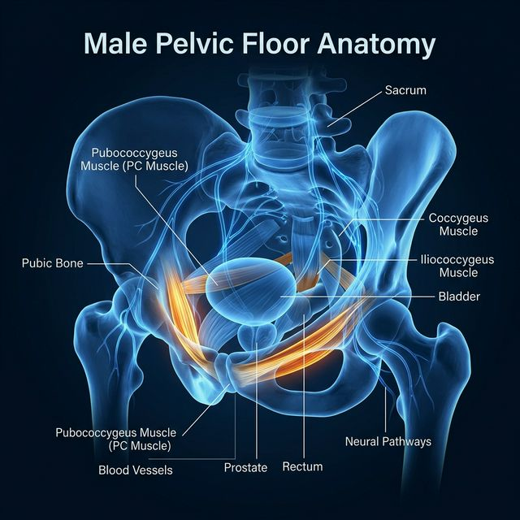
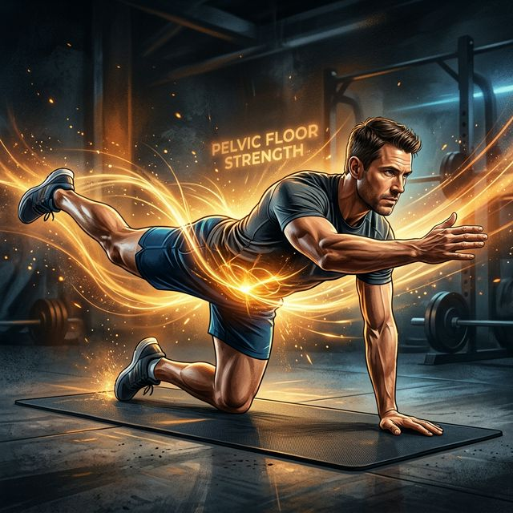
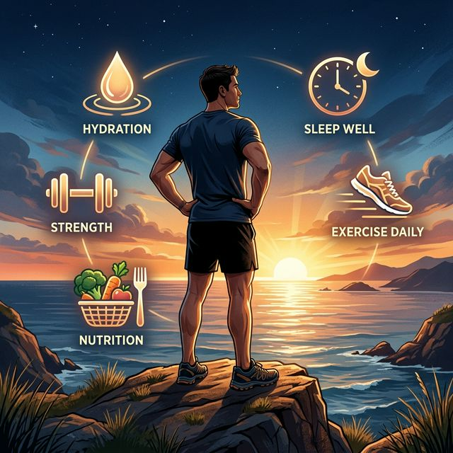

O fim da dor silenciosa. O resgate da sua virilidade. Uma abordagem clínica e visceral sobre como recuperar o controle da sua performance, de dentro para fora.
📖 Começar a LeituraExiste uma dor da qual os homens não falam. Não na mesa de bar com os amigos. Não no consultório médico. E, muitas vezes, nem mesmo com a mulher que divide a cama com eles.
É a dor de ver a virilidade – aquela força silenciosa e inabalável que sempre definiu quem você é – secar aos poucos.
A ejaculação que acontece antes da hora, deixando no ar um silêncio pesado e um olhar de frustração mútua. E então, o fantasma mais cruel de todos: a falha na rigidez na hora H. O momento em que the corpo, pela primeira vez, te trai.
Se você está sentindo isso, preste muita atenção: você não está sozinho e a culpa não é sua.
Estamos vivendo uma epidemia silenciosa que está castrando os homens modernos. Você trabalha horas a fio, engolido pelo estresse do escritório. Passa o dia inteiro sentado com a coluna curvada. Seu celular não para de apitar, seu chefe cobra metas, as contas acumulam e o cortisol dispara envenenando seu sangue. Telas, vapes, noites mal dormidas e a pressão constante de "dar conta de tudo".
Sabe o que isso faz com você? Isso calcifica a sua região pélvica. Imagine o motor de um carro esporte de luxo. Se você o deixa parado na garagem por anos, ligando apenas para ir até a esquina, o óleo engrossa, as engrenagens enferrujam e as mangueiras ressecam. É exatamente isso que a vida moderna faz com o seu sistema reprodutor.
O peso de "ser homem" e não conseguir entregar o que se espera na intimidade é um ácido que corrói a autoestima em segredo. Mas antes de aceitar que "é assim mesmo", você precisa entender: a máquina não quebrou. Ela só precisa de manutenção.

A primeira mentira que a indústria farmacêutica quer que você engula é que "depois dos 30, 40 ou 50, é normal o desempenho cair". Eles querem convencer você de que o seu RG é a certidão de óbito da sua performance sexual, para que você dependa de pílulas azuis para o resto da vida.
Existe uma estrutura no seu corpo chamada Assoalho Pélvico, e dentro dele um músculo vital chamado Músculo PC (Pubococcígeo). Ele é literalmente o alicerce da sua masculinidade. E você provavelmente nunca ouviu falar dele até hoje.
Pense no seu pênis como um sistema hidráulico. Para que uma mangueira tenha pressão máxima, você precisa de uma bomba de alta potência injetando água e de uma trava forte para que a água não vaze de volta. O seu coração é a bomba. O seu Músculo PC é a trava.
Se você passa 8, 10, 12 horas por dia sentado – no carro, no escritório, no sofá –, sem nunca exercitar ou engajar essa musculatura, ela simplesmente morre por inatividade. Ela atrofia. É matemática simples: músculo que não é estimulado, míngua.
Quando o Músculo PC está fraco, a "trava" falha. O sangue entra, mas vaza de volta pelas veias. O resultado? Você perde a ereção no meio do ato, ou nunca consegue a rigidez máxima de ferro. Além disso, é esse mesmo músculo que segura a contração da ejaculação. PC fraco = gatilho rápido = ejaculação precoce.
A boa notícia? Assim como um bíceps atrofiado volta a crescer com treino progressivo, o assoalho pélvico responde ao estímulo certo de forma rápida e eficaz. A ciência confirma isso de forma inequívoca.

Se o problema não é a sua idade, e sim uma fraqueza mecânica e atrófica, a solução é incrivelmente lógica: Reabilitação Fisiológica.
Aqui é onde precisamos derrubar outro mito estúpido: "Exercícios de Bio-Otimização Pélvica ApexCore são coisas de mulher, para grávidas". Esqueça isso. Na urologia de elite e na ciência da performance de atletas, o fortalecimento pélvico masculino é a intervenção de primeira linha para reverter disfunções sem bisturi ou química.
Vamos traduzir a ciência em linguagem real: quando você fortalece o Músculo PC com técnicas de hipertrofia específicas, você reconstrói o seu Mecanismo Veno-Oclusivo — o sistema que aprisiona o sangue no pênis sob alta pressão, gerando ereções maciças e inabaláveis.
O protocolo correto, aplicado progressivamente, pode começar a mostrar resultados percetíveis em 2 a 4 semanas. Resultados transformadores acontecem entre 60 e 90 dias de consistência disciplinada.

Você já entendeu que a salvação está nas suas mãos. Mas por onde começar? Se você nunca acessou essa musculatura, é como pedir a um cego que encontre um interruptor de luz no escuro. O primeiro passo é isolar e localizar a sua trava.
Na próxima vez que for urinar, tente interromper repentinamente o fluxo a meio. Preste atenção em qual músculo do fundo da pelve você "puxou" para dentro e para cima. É esse! (Aviso: faça apenas para descobrir o músculo, NUNCA pratique durante a micção).
Sentado e relaxado, tente "puxar" levemente a base do pênis e os testículos para cima, como se fossem um elevador subindo. Sem contrair barriga, coxas ou nádegas. Esse movimento interno é o Músculo PC trabalhando.
Se você sentiu o músculo entre o ânus e a base do escroto contrair e relaxar voluntariamente, parabéns. Você encontrou o alicerce da sua virilidade. Agora é hora de construir em cima dele.
Essa rotina é o seu tiro de largada. Você já vai sentir a "bomba" acordando nos próximos dias. Combine esses exercícios com os compostos que você vai descobrir no próximo capítulo, e o resultado será exponencial.
O treino do assoalho pélvico, os hábitos de sono e a alimentação anti-inflamatória são a fundação. Mas existe uma camada adicional que os homens de alta performance vêm descobrindo: compostos naturais e peptídeos que atuam diretamente no eixo hormonal, vascular e neural — amplificando cada resultado que os exercícios já entregam.
Este capítulo é um mapa honesto, baseado em bioquímica e estudos clínicos. Não estamos falando de anabolizantes, de pílulas azuis ou de milagres em cápsula. Estamos falando de sinalização biológica inteligente — compostos que reativam o que a idade e o estilo de vida moderno apagaram.
A maca peruana é cultivada nas altitudes extremas dos Andes há mais de 2.000 anos. Os guerreiros Incas a consumiam antes das batalhas para potencializar força e resistência. Hoje, a ciência moderna entendeu por quê.
A Maca não eleva diretamente a testosterona, mas age de forma mais inteligente: ela modula o eixo hipotálamo-hipofisário (HPA), que é o sistema central de controle hormonal do corpo. Ao equilibrar esse eixo, ela reduz o cortisol cronicamente elevado e cria o ambiente hormonal ideal para a testosterona endógena prosperar. Estudos duplo-cegos documentaram melhora significativa em libido, energia sexual e redução da disfunção erétil psicogênica em 8 a 12 semanas de uso consistente.
Aqui está um dado que ninguém te conta: muitos homens após os 35 anos não têm apenas pouca testosterona — têm excesso de estrogênio. A enzima chamada Aromatase converte testosterona em estradiol (estrógeno), e o sedentarismo, a gordura visceral e os xenoestrógenos ambientais (plásticos, pesticidas, álcool) aceleram esse processo degenerativo de forma brutal.
A boa notícia: compostos naturais chamados inibidores de aromatase fitoterápicos podem frear essa conversão, restaurando o equilíbrio T:E2 (testosterona para estradiol) — o verdadeiro marcador da virilidade bioquímica.
Nos últimos anos, a medicina de longevidade e a biohacking community de elite descobriram uma classe de moléculas de altíssima especificidade chamadas peptídeos bioativos. Diferente de hormônios exógenos, eles sinalizam o organismo a produzir suas próprias respostas — de forma muito mais fisiológica e segura.
Ao contrário dos medicamentos como o sildenafil (que agem nos vasos), o PT-141 age diretamente no sistema nervoso central, nos receptores de melanocortina MC3R e MC4R, ativando o circuito neurológico do desejo sexual. Resulta em aumento significativo tanto de libido quanto de rigidez erétil. É a única molécula aprovada pela FDA para desejo sexual hipoativo, tanto em homens quanto em mulheres. Uso: subcutâneo conforme orientação médica específica.
Peptídeo de origem gástrica com propriedades regenerativas documentadas em múltiplos sistemas do corpo. Para a saúde sexual masculina, o seu papel mais relevante é a ativação do eixo óxido nítrico (via eNOS) — a mesma molécula que causa a vasodilatação dos corpos cavernosos durante a ereção. Também documentado para reduzir inflamação vascular sistémica, acelerando a recuperação do endotélio dos vasos penianos. Uso oral ou subcutâneo, fora de alimentos. Ainda em fase de pesquisa avançada.
Combinação de secretagogos de GH (hormônio de crescimento) que estimulam a hipófise a produzir GH de forma pulsátil, imitando o pico natural do sono profundo. O GH é fundamental para a regeneração muscular (incluindo o assoalho pélvico), para a qualidade do sono, para a manutenção do peso e para os níveis de energia geral. Ao melhorar a qualidade do sono profundo, estabelece uma cascata positiva em toda a saúde sexual. De uso exclusivamente médico prescrição.
O erro que a maioria comete é usar suplementos como atalho, sem trabalhar a base. A sinergia real acontece quando você combina:
Este é o nível de inteligência que separa o homem que espera melhorar do homem que engenheiriza a própria biologia. Você agora tem o conhecimento. O próximo passo é a ação.
Você terminou os 5 capítulos da Bio-Otimização Pélvica Masculina. Agora carrega dentro de si o mapa completo — da dor silenciosa à bioquímica de elite. O diferencial entre os homens que continuam sofrendo e os que transformam a sua realidade é uma só coisa: começo imediato.
Capítulo 1 a 5: da compreensão da dor, passando pela anatomia do Músculo PC, pelo protocolo ApexCore baseado em ciência clínica, pelos hábitos de bioativação diária, até o arsenal completo de compostos naturais e peptídeos de alta performance. Tudo o que você precisa para começar está aqui.
Ebook 1: Bio-Otimização
Verifique a descrição da Lastlink, a senha está lá.